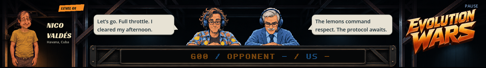
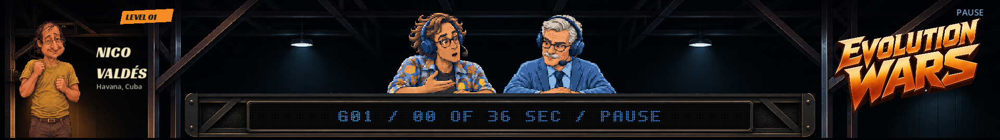
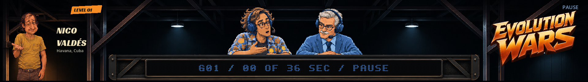
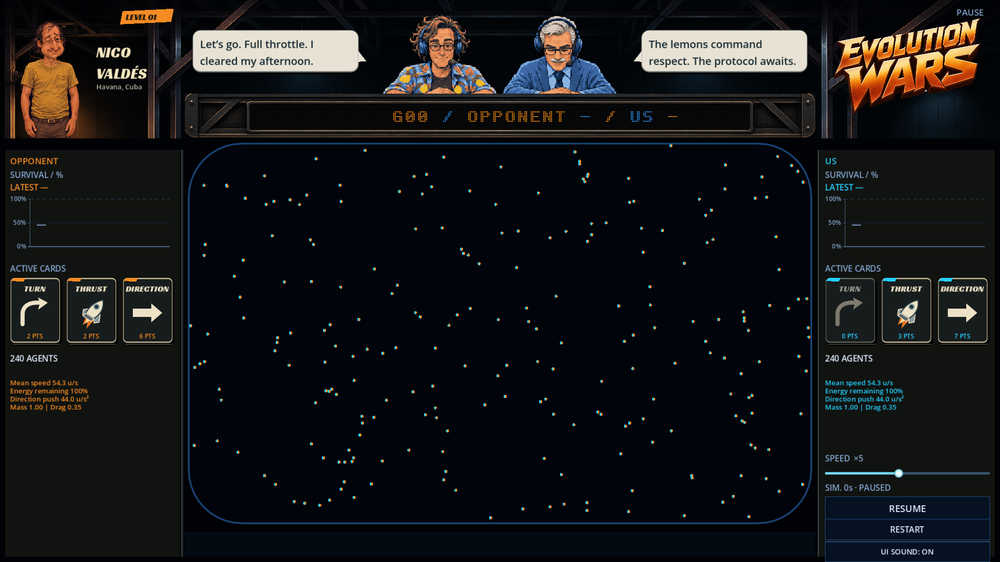
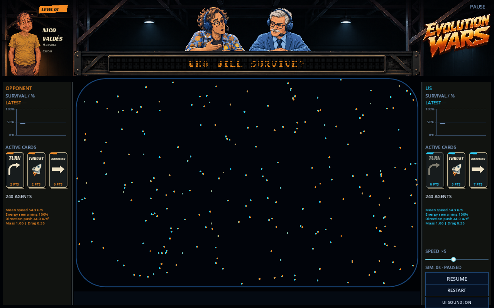

Animateurs agrandis de 12,5 %. Nico apparaît jusqu’à la ceinture ; le nom et la ville restent à côté de son corps.

Captures du jeu, étape par étape : Gérard reste étonné et engagé lorsqu’il se rassoit. L’échange avec René remplace le balayage gauche-droite systématique.



